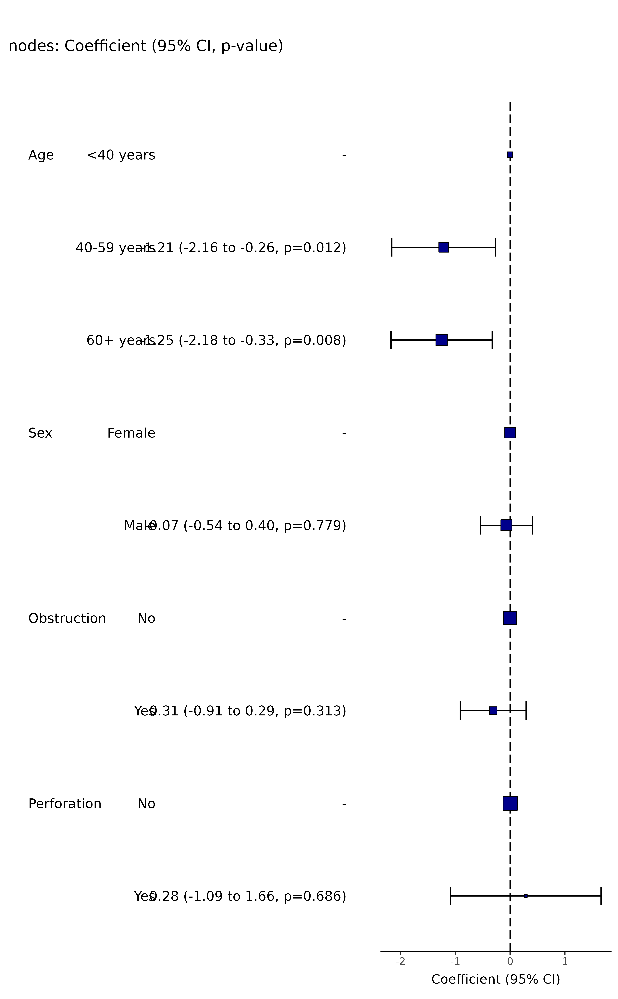
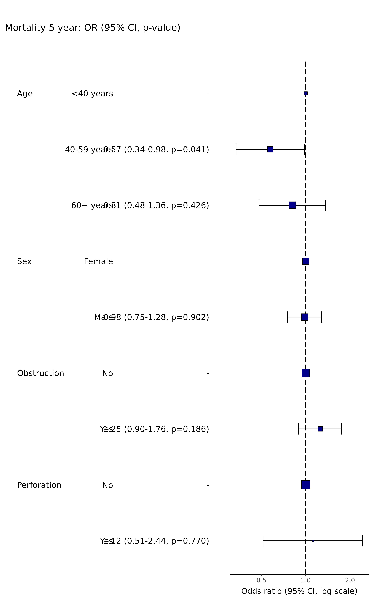
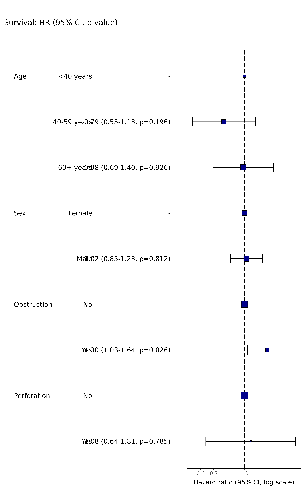

Wraps or_plot, hr_plot, and
coefficient_plot and sends to the appropriate method depending
on the dependent variable type.
ff_plot(.data, dependent, explanatory, ...)
finalfit_plot(.data, dependent, explanatory, ...)Data frame.
Character vector of length 1.
Character vector of any length: name(s) of explanatory variables.
Pass arguments or_plot, hr_plot, or
coefficient_plot
A table and a plot using ggplot2
Other finalfit plot functions:
coefficient_plot(),
hr_plot(),
or_plot(),
surv_plot()
# Coefficient plot
explanatory = c("age.factor", "sex.factor", "obstruct.factor", "perfor.factor")
dependent = "nodes"
colon_s %>%
ff_plot(dependent, explanatory)
#> Note: dependent includes missing data. These are dropped.
#> Warning: Removed 4 rows containing missing values (`geom_errorbarh()`).

# Odds ratio plot
dependent = "mort_5yr"
colon_s %>%
ff_plot(dependent, explanatory)
#> Note: dependent includes missing data. These are dropped.
#> Waiting for profiling to be done...
#> Waiting for profiling to be done...
#> Waiting for profiling to be done...
#> Warning: Removed 4 rows containing missing values (`geom_errorbarh()`).

# Hazard ratio plot
dependent = "Surv(time, status)"
colon_s %>%
ff_plot(dependent, explanatory, dependent_label = "Survival")
#> Dependent variable is a survival object
#> Warning: Removed 4 rows containing missing values (`geom_errorbarh()`).
